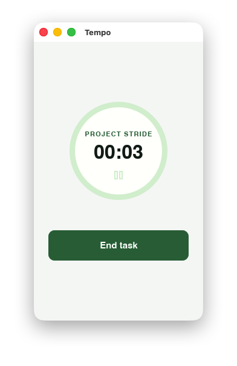
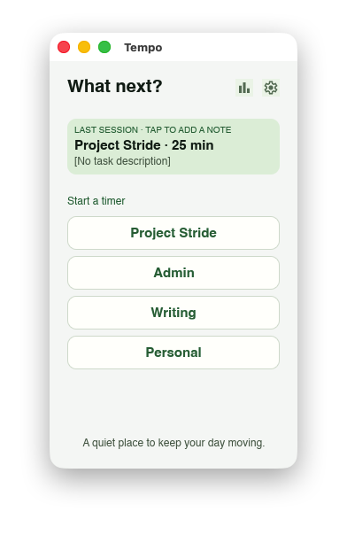
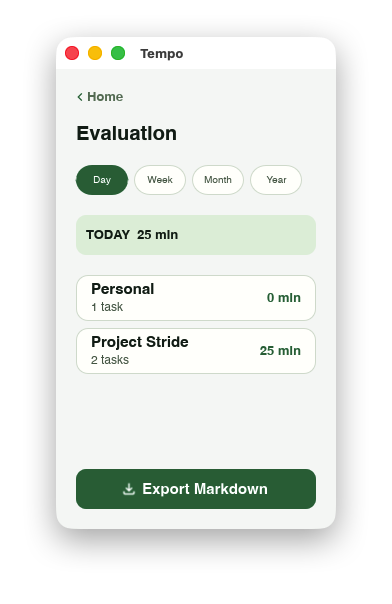

Wähle, woran du arbeitest
Organisiere deine Arbeit in Projekten – schlicht, übersichtlich und jederzeit anpassbar.
Kostenlos & Open Source
Ein ruhiger, lokaler Desktop-Begleiter für fokussierte Arbeit. Wähle ein Projekt, starte deine Session und behalte den Überblick – ohne Browser-Tab und ohne Cloud.

Klar statt kompliziert
Tempo unterstützt genau den kleinen Ablauf, der hilft: entscheiden, anfangen, festhalten, zurückblicken.
Organisiere deine Arbeit in Projekten – schlicht, übersichtlich und jederzeit anpassbar.
Starte eine fokussierte Session, pausiere bei Bedarf und beende sie mit einer kurzen Notiz.
Werte Tage, Wochen, Monate oder Jahre aus und exportiere deine Auswertung als Markdown.


Bewusst als Desktop-App
Tempo ist kein weiterer Tab, der zwischen Nachrichten und Recherche verschwindet. Als kleines Fenster hat es einen festen Platz auf deinem Bildschirm – sichtbar, ruhig und bereit, wenn du beginnen möchtest.
Deine Daten gehören dir
Projekte, Sessions und Notizen liegen in einer lokalen SQLite-Datenbank auf deinem Rechner. Tempo braucht kein Login und sendet deine Arbeitsdaten an keinen externen Dienst.
Bereit, anzufangen?
Die erste Vorabversion 0.1.0-rc.1 erscheint auf GitHub Releases – mit Paketen und Hinweisen für die jeweilige Plattform.
0.1.0-rc.1 noch nicht sichtbar? Schau bald wieder vorbei oder starte Tempo aus dem Quellcode.